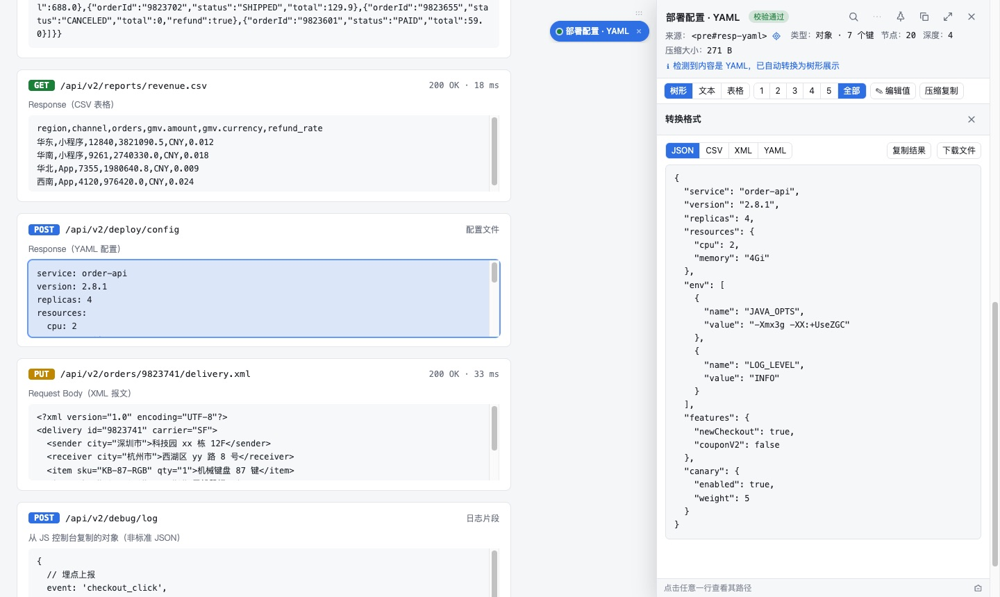

JSON ⇄ CSV ⇄ XML ⇄ YAML 一键互转
Convert JSON ⇄ CSV ⇄ XML ⇄ YAML in one click
「⋯」→「转换格式」在四种格式之间互转，可复制结果，或下载 .json / .csv / .xml / .yaml 文件。属性、数组、嵌套结构都能正确映射。
“⋯” → “Convert format” converts between the four formats. Copy the result or download .json / .csv / .xml / .yaml. Attributes, arrays and nesting are mapped correctly.
